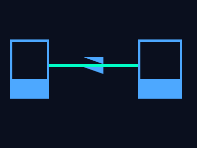

第六课
网络通信原理
打开一个网页，背后发生了什么？
网络的层次模型
网络通信不是一个程序直接和另一个程序对话，而是分层处理的：
- 应用层（HTTP / DNS / SMTP）— 你用的软件层面
- 传输层（TCP / UDP）— 确保数据可靠到达
- 网络层（IP）— 数据包的路由和寻址
- 链路层（以太网 / Wi-Fi）— 物理传输
每一层只关心自己的事。上层的"包裹"被封装进下层的"包裹"里，层层传递。
IP 地址
每台连上网络的设备都有一个IP 地址，就像你的"网络门牌号"。
- IPv4 — 32 位，如
192.168.1.1，总约 43 亿个，已不够用 - IPv6 — 128 位，如
fe80::1，几乎无限 - 公网 IP — 全球唯一，可直接从互联网访问
- 内网 IP — 如 192.168.x.x / 10.x.x.x，仅在局域网内
在命令提示符输入
ipconfig 查看你电脑的 IP 地址。
DNS：把域名翻译成 IP
你记不住 IP 地址，所以用域名（如 baidu.com）。DNS 就是"电话簿"：
- 你输入
www.baidu.com→ 系统问 DNS 服务器"这个域名对应哪个 IP？" - DNS 服务器返回 IP → 你的浏览器用这个 IP 去连接
DNS 解析过程：浏览器缓存 → 系统缓存 → 路由器缓存 → ISP 的 DNS 服务器 → 根 DNS → 顶级域 DNS → 权威 DNS
按 Win + R 输入 nslookup baidu.com 查看解析结果。
TCP 三次握手
TCP 是面向连接的协议，传输数据前要先建立连接：

- SYN — 客户端 → 服务器："我想连接"
- SYN-ACK — 服务器 → 客户端："好的，确认"
- ACK — 客户端 → 服务器："收到，开始传数据"
三次握手的目的是确认双方的发送和接收能力都正常。
端口（Port）
一个 IP 地址对应一台设备，但设备上有多个程序要联网。端口解决这个问题：
- IP 找到设备，端口 找到设备上的具体应用程序
- Web 服务器默认用 80（HTTP）或 443（HTTPS）
- 常见的端口：22（SSH）、53（DNS）、3389（远程桌面）
一个连接由五元组唯一标识：(源IP, 源端口, 目标IP, 目标端口, 协议)
用 netstat -ano 查看当前系统所有的网络连接。
打开网页的全过程
从你输入 www.baidu.com 到页面显示：
- 浏览器检查缓存，没有则请求 DNS 解析
- DNS 返回 IP 地址
- 浏览器与服务器建立 TCP 连接（三次握手）
- 浏览器发送 HTTP GET 请求：
GET / HTTP/1.1 - 服务器返回 HTML 响应
- 浏览器解析 HTML，发现需要 CSS/JS/图片 → 重复以上过程
- 渲染引擎绘制页面
总结
- 网络是分层的，每层封装下层的协议
- IP 地址是设备的网络标识，域名通过 DNS 翻译成 IP
- TCP 三次握手建立可靠连接
- 端口号区分同一设备上的不同应用程序
- 打开网页 = DNS + TCP + HTTP 请求 + 渲染
按 F12 打开浏览器开发者工具 → 网络标签页，可以看到每个请求的完整过程。